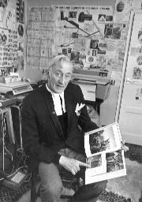

To Hillsborough for the semi-final9.45pm. Dad and I have been to Sheffield to see Birmingham City’s F.A. Cup semi-final tie with Leeds Utd. They lost 3-nil. Last night’s Bible Study was at our house, our subject The UFO Phenomenon in the Light of Spiritual Cognition [Tape No.270]. Afterwards we had virtually another Bible Study on Financial Prosperity. No one wanted to go home and it was almost midnight when we dropped Janet at her house. It was ten past one when I got into bed and I read for a few minutes and completed The Light in Britain [by Grace and Ivan Cooke]. As usual I was awake at 5.45am but did not get up until 8.00am. After breakfast I went to the office to open the letters, then took Freda to her mother’s (where I am writing this) where Dad joined us a few minutes later. We left for Sheffield at 10.18am, heading south to join the M6 at Stonebridge and then cutting across to join the north-bound M1 via the A426. This was 40 miles extra to travel but I thought it would be faster. Indeed, when we stopped at the final service station near Sheffield we had covered 105 miles in 102 minutes. We finally left the motorway at midday and it took us a further 60 minutes to cover the last five miles. The journey to Hillsborough took us along Upwell Road over ground that was very familiar from when we stayed in Sheffield about ten years ago. I was ministering at Hoyland at the time, but we were staying with Pastor Tom Buckley. We were able to park the car on high ground about a mile from Hillsborough, from which we could actually see the Stadium. We ate our sandwiches in the car. The terraces were comfortably filled when we entered the ground at 1.45pm. A few minutes later there was a great cheer as the Birmingham City team came out to inspect the pitch. I was struck by how young they looked. Shortly afterwards the Leeds players came on to the field. I immediately recognised Jackie Charlton and Billy Bremner from seeing them so often on TV. During the next 50 minutes the crowd was entertained by the Dagenham Girl Pipers (whose coach we had passed on the motorway) and the Band of the Royal Corps of Signals. Four pairs of girls performed a sword-dance. It was, I think, the first Saturday afternoon match I had been to since 1956 when Dad and II saw Manchester City play in a semi-final at Villa Park, while Birmingham City, in one of their finest-ever displays, were defeating Sunderland 3-nil on this same Hillsborough ground. Few people gave Birmingham much chance of success against the Leeds United team, which is possibly the finest in Europe. [The teams were: Birmingham City:— Kelly; Martin, Pendry; Page, Hynd, Robinson; Campbell, Francis, Latchford, Summerill, Taylor; and substitute Hatton. Leeds United:— Sprake; Madeley, Cooper; Bremner, Charlton, Hunter; Lorimer, Clarke, Jones, Giles, Gray; substitute Reaney.] Birmingham City played in red shirts with a white stripe down the middle, and Leeds United in all-yellow. |
I hear from a daughter of King Edward VII9.24pm. I have — as usual — been working virtually non-stop since before 7.00 this morning. By 7.30am I had cleaned out the fire, tidied up the office — I had left a book pressing under a heavy pile of filing card boxes — and taken the car into Elt’s for its 54,000 mile service. There was a big pile of correspondence to answer from Saturday, but today’s letters did not arrive until after 10.00am when our Russell Road postman brought them. He told me that there is no regular postman to do our walk. At least one postman from Hall Green has been dismissed recently for dishonesty. When Dad came in he handed me a gift of £1 from Geoffrey Belton. More than £100 came in today. This included £50 from Mrs. Thornton. Stanley Betterton ’phoned during the morning. Jean asked what he wanted and he said he had been looking for our entry in the ’phone book and, not finding it, had rung to see if we were still there. Sometimes I think he is touched in the head. A sad case of someone definitely afflicted in this way is the poor soul who wrote me this morning telling me she was the daughter of Edward VII, who had left her a house and land of which she had been defrauded by her doctor, who was, she explained, Adolf Hitler in disguise. There were some terrible cases for which prayer was requested, including a 17-year-old youth with a cancerous growth on his hip the size of a football. Stanley Montgomery, himself much in need of prayer, sent me a wonderful testimony of healing from the Plymouth Crusade of 5½ years ago, a young girl who was healed of a TB spine and discarded her plaster case. Like the nine lepers who were healed, we might never have known the wonderful answer to prayer in this case. Maurice Pratt ’phoned this afternoon to ask if he could come at 4.30pm instead of 6.30pm, so I came home early. The 1971-72 accounts have now to be completed this week, and I have been working on these all evening. |

The Revd Stanley Montgomery in his office in Braintree, Essex. He is showing me his photo album, and a pyramid chart is on the wall behind him. |
FRIDAY 22nd DECEMBER
Previous chapter || Next chapter || Index || Search |